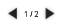

close X
Help
How do I see the annotations?How do I add/edit annotations?
How do I handle affixes / parts of words?
How do I add/edit pages?
How do I navigate page content?
How do I access the translation box?
How do I see the annotations?
Full annotations are not displayed in the editor. To see what annotations have been added to any particular word, click the word in the right-column annotations list or highlighted in the document text to open the gloss editor. Double-click on an entry in the "Annotations" list to see the information in that annotation.How do I add/edit annotations?
Open the gloss editor by clicking on a highlighted word, one of the words in the right-column gloss list, or the + button in the right-column. To add additional annotations to a previously annotated word, ensure that word is selected in the gloss library, and click one of the "Add _ Annotation" buttons. To begin adding annotations to a non-annotated word, first type the word in the "Glossed Word" box and click "Add to Library", or open the gloss editor by highlighting an unglossed word & selecting "Add Gloss" from the right-click menu. To edit an annotation, double-click on an existing annotation in the list to bring up the "Add" dialog with it's data already filled-in.How do I handle affixes / parts of words?
You can use non-display characters to break up words so that only pieces will be highlighted. Typing "\@" in the page editor will add a non-display character to the text. In languages that do not typically mark word boundaries (such as Japanese), all annotations must be suffixed with the "\@" non-display character to separate them from the rest of the text for highlighting. A dialog box will ask for permission to do this marking automatically when you add a new annotation or edit an annotation that is not marked on the current page.How do I add/edit pages?
Open the page editor by clicking on the + button in the content area. This allows you to edit the title and text for one page at a time; in a new document, you will start with 1 blank page to edit. To add additional pages, click the "New Page" button. The page currently being edited can be changed by selecting a page in the library list and clicking the "Load Page from Library" button, or by double-clicking on a selection from the page library. Pages can be re-ordered and deleted with the "Move Selection Up", "Move Selection Down", and "Delete from Library" buttons.How do I navigate page content?
Locate the black arrows shown above and click either the left or the right to navigate forward or back. Alternately, double-clicking on the current page number will open a dialog box to allow you to jump to any page immediately.
How do I access the translation box?

Select a word or words that you want to translate. While the selection is still on, right click to bring up the Right Click Menu. Select "Translate". A box containing the translation will appear. To move the box click and drag. To close the box click "close X".